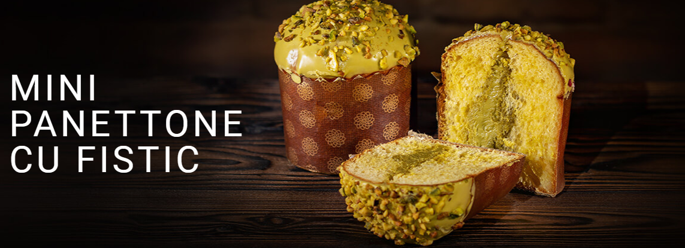
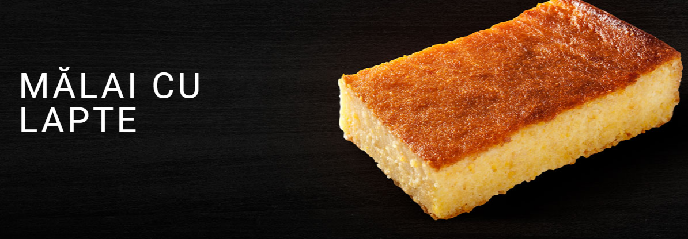

1 / 3

2 / 3

3 / 3

Povestea a început în anul 1993, cu un cuptor de cărămidă în care se cocea pâinea de un kilogram.Am prins gustul pentru acest meșteșug și ne-am gândit să îl aducem aproape de oameni.Am hotărât să folosim ingrediente simple și bune, să păstrăm rețetele adevărate și să punem suflet în munca noastră. Și așa, pâinea Bakeria a ajuns o pâine iubită de clujeni.
Lucrurile s-au copt încet, ca o pâine bine făcută. Am ridicat moara, am clădit fabrica și am început să plămădim sortimente noi de pâine, cozonaci și alte bunătăți.
În ultimii ani, am deschis magazinele: spații frumoase și cu bun gust, care oglindesc grija noastră pentru detalii. Am vrut să ne răsplătim cumpărătorii; să-i facem să se simtă bine când trec pe la noi.
De curând, am dat poveștii noastre un nume: Pâine cu suflet!
Brutarii sunt oameni înțelepți, pasionați de munca lor și dornici să vadă ieșind din mâinile lor produse adevărate.
Ei știu să se lupte cu aluatul, să-l lase să se odihnească, să pregătească focul și să scoată la timpul potrivit bunătățile din cuptor. Patiserii sunt niște artiști ai rafinamentului.
Produsele de patiserie sunt rodul talentului, al simțului estetic și al grijii pentru un gust desăvârșit.Fiecare pâine este frământată cu mâna; fiecare produs de patiserie este decorat cu grijă.
Așa ajung în casele clujenilor produse bune și frumoase, care adună oamenii în jurul mesei.